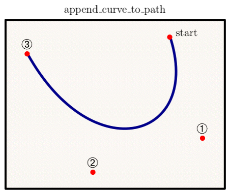

module Tioga::Tutorial::UsingRuby
The bare essentials for using ruby with tioga¶ ↑
If you're asking “What's Ruby?”, then take a moment to visit the What’s Ruby page. Briefly, Ruby is an object-oriented, highly dynamic “scripting” language created by Yukihiro Matsumoto with the intent to “maximize the joy of programming”. I think he succeeded!
First, a disclaimer: this is NOT a complete tutorial for Ruby. As a matter of fact, this isn't even an incomplete tutorial for Ruby. I'm just going to cover enough so that you can use Ruby to write simple definitions for tioga figures and plots. At the end, I'll give some links to places where you can get much more information.

Here's the “curve” procedure from “plots.rb” that creates the “append_curve_to_path” plot shown above. Don't worry about understanding the details of what's going on (we'll be discussing this routine later in the SimpleFigure section). The discussion at this point is at the level of syntax and issues like what a procedure call looks like.
1 def curve 2 t.landscape 3 t.show_text('text' => 'append\_curve\_to\_path', 'side' => TOP, 'shift' => 0.6, 'justification' => CENTERED, 'scale' => 0.9, 'position' => 0.5) 4 background 5 x0 = 0.75; y0 = 0.9 6 x1 = 0.9; y1 = 0.3 7 x2 = 0.4; y2 = 0.1 8 x3 = 0.1; y3 = 0.8 9 t.move_to_point(x0, y0) 10 t.append_curve_to_path(x1, y1, x2, y2, x3, y3) 11 t.line_width = 2.5 12 t.line_color = DarkBlue 13 t.stroke 14 t.show_marker( 'xs' => [ x0, x1, x2, x3 ], 'ys' => [ y0, y1, y2, y3 ], 'marker' => Bullet, 'scale' => 0.6, 'color' => Red); 15 dx = t.default_text_height_dx * 1.4 16 t.show_label('x' => x0+dx, 'y' => y0, 'text' => "start", 'scale' => 0.9); 17 scale = 1.2; dy = t.default_text_height_dy * 0.8 18 t.show_marker( 'at' => [x1, y1+dy], 'marker' => Circled1, 'scale' => scale); 19 t.show_marker( 'at' => [x2, y2+dy], 'marker' => Circled2, 'scale' => scale); 20 t.show_marker( 'at' => [x3, y3+dy], 'marker' => Circled3, 'scale' => scale); 21 end
The “t.” stuff simply means we're talking to tioga, either to get values of variables (which in Ruby are called “attributes”) or to get it to execute one of its procedures (which are called “methods”). There are cases in which we're setting attributes, such as line_width and line_color (lines 11 and 12), or using the values of attributes, such as default_text_height_dy (line 17).
There are a couple of obvious procedure calls to move_to_point and append_curve_to_path (lines 9 and 10). The “t.landscape” on line 1 and the the “t.stroke” on line 13 are procedure calls too even though they lack parentheses. Turns out that Ruby doesn't need you to write “t.landscape()” or “t.stroke()” since it can figure out what's going on (but if you'd like to keep the parens, that's ok too).
On lines 5 to 8, we've used semicolons to put two statements on a single line. Except for that special use, you can forget about semicolons. Square brackets are used for creating arrays (as in the calls to show_marker).
Take a look at the calls to show_text, show_marker, and show_label (lines 3, 14, and 16). The arguments are given as “key-value” pairs. Actually, if you look at the documentation for any of these three methods, you'll see that they take a single argument which is a dictionary (called a “Hash” in Ruby in honor of the “hash tables” of computer science lingo). Ruby knows about dictionaries of course, and allows you to write a dictionary expression of the form
{ 'at' => [x1, y1+dy], 'marker' => Circled1 }
Just as the [ … ] form constructs an array, the { … } form is used to construct a dictionary. In an argument list, Ruby lets you drop the curly brackets since it can figure out the meaning (unless you've done something goofy like have two args in a row that are both dictionaries). The biggest benefits from using dictionaries for argument lists are the freedom they allow for optional arguments, the arbitrary argument ordering, and the “self-documenting” calls.
Here's an example showing the usual form for calling routines with a dictionary for it argument:
t.show_marker( 'at' => [x1, y1+dy], 'marker' => Circled1 )
The strings “at” and “marker” are the dictionary keys. The “=>” symbol links the key to its value. The value for “at” is an array with entries x1 and y1+dy. The value for “marker” is a constant (you can tell by the initial capital letter – in Ruby an name is the name of a constant if and only if it has a first letter that is a capital).
Notice the flexibility this use of dictionaries for arguments gives. Back in the “curve” method, on line 14, the first call to show_marker gives the positions as vectors of x and y locations by using the dictionary keys “xs” and “ys”. In the later calls, the positions are given as an [x,y] pair using the key “at”. In the first call, the color is given explicitly, while in the later calls it is omited and the default color is used instead. And in no case is the order in which the entries are listed significant to the way the code works.